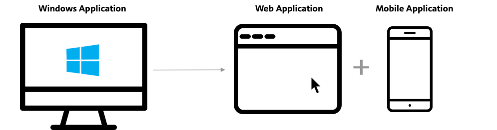

Document Management Platform
Mortgage software company
Ellie Mae is an enterprise mortgage software company. The company is working to automate and streamline the mortgage process from initial application to selling off the loan in the secondary market. The software helps lenders lower the costs and time to close the loan. Currently, ~40% of the mortgages in the United States pass through the software. Until recently, Ellie Mae was a desktop client but now we are migrating our platform to the web.
{kind=link}
Managing loan documents
It's a no brainer that one of the major components of processing a mortgage is documents. A loan is made up of a lot of documents like the ones uploaded by the borrower (like pay stubs and bank statements), sent by other agencies (like credit and title reports) and generated by the lender as part of the loan processing (like disclosures). Every document is an essential element to verify the lending decision.

Since document management and processing is at the heart of any mortgage loan, making it an efficient process not only increases the productivity of the lenders but reduces the cost of closing the loan.
Complex user groups
While handling thousands of loan documents is in itself a daunting task, the system is made more complex by the number of user groups that are collaborating in this space. Although, there are many user groups that touch the system at various touchpoints during the mortgage process, primarily there are 3 users who collaborate closely to verify the documents -
- Loan officers are the ones interacting with the borrowers to get their documents.
- Processors organize the documents uploaded by loan officers and borrowers. They send out initial disclosure to the borrowers to sign. They order all the verification reports related to borrower, sellers and the property. They ensure that all of the documents are present before going into underwriting.
- Underwriters ensure that all the required documents are available. Data in documents match with the data in the loan file.
{kind=link}
Project introduction
This was a long-running project and thus, the work on the document management platform was divided into three different sub-phases
- Web - Since the software has been a windows only solution, features and functionality of the doc management system were translated to a cloud-based web solution.
- Mobile - Certain users, Loan officers, specifically, are on the go while performing key tasks related to the verifying and collating documents for the loan. Hence a subset of features was identified for the mobile solution.
- Cross-platform doc viewer (similar to adobe pdf viewer) - A cross-platform doc viewer to support key tasks of viewing and analyzing document was designed across the 3 platforms: web, mobile, and desktop.
My Role
I was the UX designer on the team and was involved through the product development lifecycle, starting from research to delivery. I collaborated closely with the researchers, PM's, BA's and the dev team to simplify requirements, design assets and implement the solution.
- Support Researchers: A quick and dirty prototype for research. Shadowed the UX researchers during the research and testing sessions.
- Redesign web and mobile: Translated existing web architecture to the mobile context and re-designed the navigation patterns for the existing mobile app.
- Interaction specs: Handed-off final UX requirements to visual designers in the form of high-fidelity interaction mockups and specs.
- Led the UX of document viewer where I collaborated with product managers, the dev team, UX researcher, visual designer and accessibility lead for this product to get the right experience implemented.
{kind=link}
Getting to know the users
There were two parallel research efforts that informed the design of doc platform. One was geared towards understanding users tasks by cataloging day in the life of loan officers. The other was focused on understanding their mobile-specific needs/ tasks. For assisting the researchers, I created research assets for mobile research. Working with PM and UX researchers, I mocked different feature sets for mobile that the researcher used to probe the user. This research helped us in creating a prioritized list of tasks that users would perform on mobile.
I will discuss the insights, pain-points and respective solution in detail below.
Wireframe

Web Version
The mobile design was tested with 5 participants. The navigation pattern for the redesign was loved by all the users. Even the users who had never used this platform to perform the task were able to easily navigate through it.

Mobile Version
- Some of the screens had multiple navigation bars and floating action buttons. I was able to use the data from user research to overhaul the navigation and information architecture.
- There were a lot of inconsistent patterns in mobile. We were able to define a more consistent language for mobile.
- Expected to have 20k users within one year of launch in March in 2019.
- Actively working with business development and customer education team to gather feedback.

Document Viewer
- Redesigned
User Testing
The mobile design was tested with 5 participants. The navigation pattern for the redesign was loved by all the users. Even the users who had never used this platform to perform the task were able to easily navigate through it.
For the doc viewer, it was tested with 8 users. Most of the design worked well except the fact that the user wanted edit button to be more prominent and that they wanted editing capability on the home screen. It was a technical challenge that would impact performance. We are currently working to figure out how to give those features/ subset of features on the main screen without impacting performance.
Impact
- Doc viewer: It is being used by different product teams.
- We were able to extract new patterns from the designs such as master-detail, hierarchical data grid, etc.
Takeaway
UX team lead research session with all stakeholders listening in to the session. Because of this, most of the stakeholders aligned with users and UX team.
Due to strong collaboration with developers, we were able to ensure that we didn't break the user experience as the product evolved. We designed not only the MVP version but the whole growth trajectory for the product.